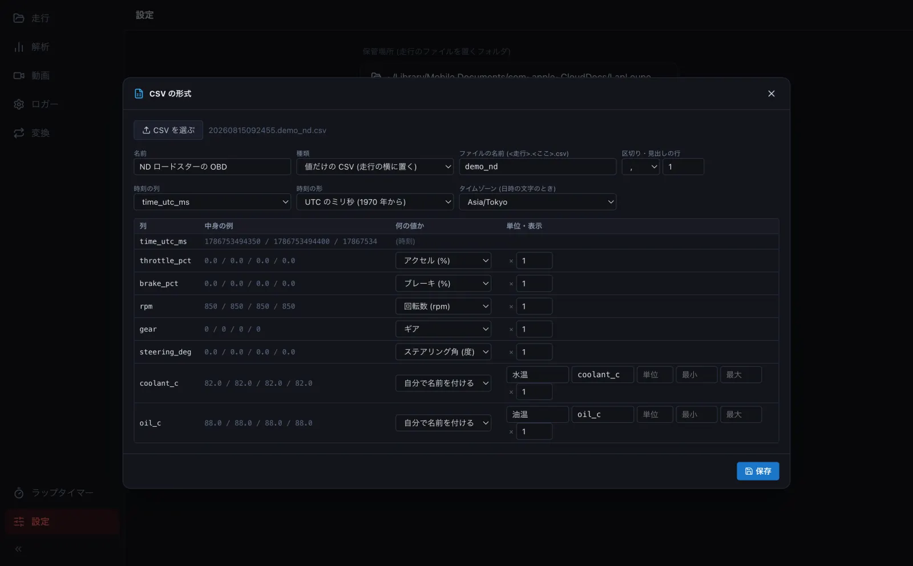
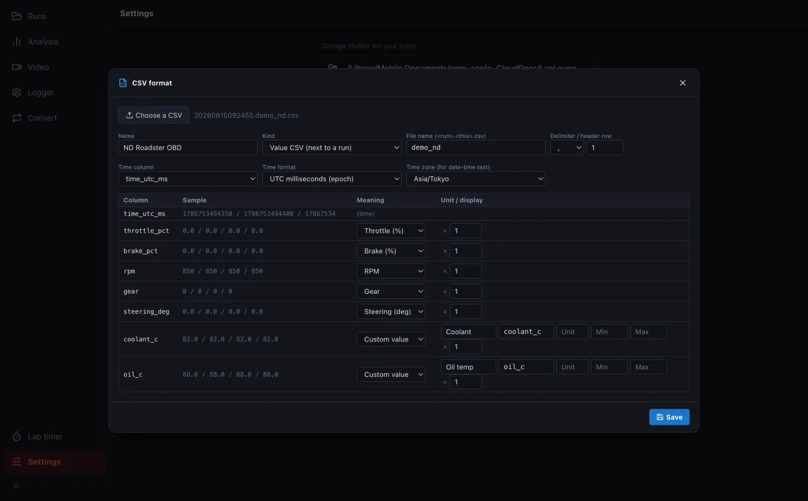
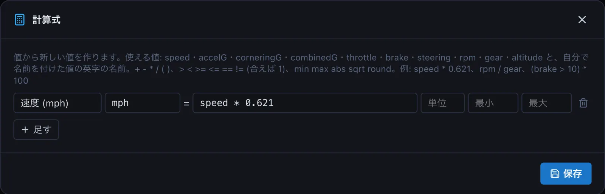
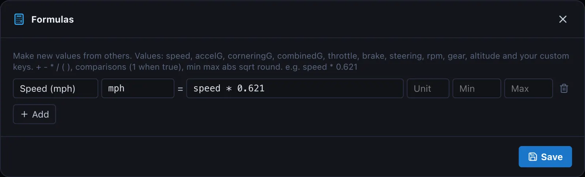

ほかの機器の CSV を読むReading CSV files from other devices
ほかのロガー・OBD・アプリの CSV の列が何の値かを 1 度決めておくと、ファイルや走行を開くときに自動で読みます。アクセル・回転数・水温などが、メーターや値の帯に出せるようになります。Tell LapLoupe once what each column of another logger, OBD or app's CSV means, and it reads those files automatically. Throttle, RPM, coolant temperature and more then appear in the meters and value strips.
-
設定 の CSV の形式を作る を押し、見本の CSV を選びます。区切り・見出しの行・時刻の列・各列の意味を当てて表で出すので、違うところを直します (何の値か・単位・倍率・時刻の形・タイムゾーン)。決まった値にないものは 自分で名前を付ける で名前と単位を付けます。In Settings, press New CSV format and pick a sample CSV. The delimiter, header row, time column and each column's meaning are guessed; correct anything wrong (meaning, unit, scale, time format, time zone). For values not in the list, choose Custom value and give a name and unit.


-
種類は、走行の CSV (緯度・経度がある) か、値だけの CSV (走行の横に置く
<走行>.<名前>.csv) です。値だけの CSV の名前には、機器を登録したときの「ファイル名用の名前」を書きます。The kind is either Run CSV (has latitude and longitude) or Value CSV (the<run>.<name>.csvnext to a run). For a value CSV, enter the device's file name from registration. - 保存 すると保管場所の formats フォルダに入ります。それからは、走行を開くと横の CSV を自動で読み、値の帯 (→ D3) やメーター (→ F1) で選べます。After Save it is stored in the formats folder. From then on, opening a run reads the CSV next to it, and the values can be picked in strips (→ D3) and meters (→ F1).
-
計算式 では、値から新しい値を作れます (例: speed * 0.621 で mph、rpm / gear)。Formulas makes new values from others (e.g. speed * 0.621 for mph, rpm / gear).


形式の定義はパソコンで作ります。保管場所に入った定義は、iPhone・Android のアプリでもそのまま使われ、走行を開くと自動で読みます。Create formats on a computer. Once in your storage folder they are used by the iPhone and Android apps too, automatically when you open a run.